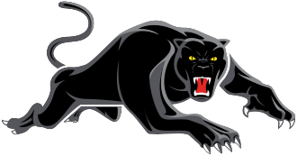

Penrith Panthers, NRLSydneyOct 2025 – PresentNRL Sports Scientist
One of the most successful clubs in the NRL, with four consecutive premierships (2021–2024).
- Produce and deliver a comprehensive weekly reporting suite covering GPS outputs, training availability, wellness and screening data, body mass, coach match-performance ratings and match summaries, with narratives that drive daily conversations across performance, medical and coaching staff.
- Conduct conditioning testing and pre-season summaries to establish individual athlete baselines, used directly to inform periodisation and pre-season planning.
- Develop individual athlete deep-dive analyses to surface performance trends and risk profiles, providing the evidence base for load-adjustment and individualised programming conversations.
- Deliver training-quality reports from subjective monitoring data to evaluate session effectiveness and give staff a shared reference point for session structure and intensity.
Systems: Catapult, Teamworks, VALD, GymAware, NordBord, R, Python, Power BI, Tableau, Excel, Claude Code, GitHub, Railway, wellness monitoring, return-to-play coordination.
 GWS Giants, AFLSydneySep 2024 – Oct 2025
GWS Giants, AFLSydneySep 2024 – Oct 2025VFL Performance Coach and AFL Sports Science Intern
- Operated Catapult GPS during training, providing real-time feedback and load monitoring to support individualised session adjustments.
- Prescribed speed and conditioning, ran velocity-based training with GymAware, and built monitoring dashboards in Excel, Power BI and Tableau.
- Led weekly testing and monitoring protocols and supported data-informed return-to-play decisions.
- Led on-field and gym-based reconditioning for AFL-listed athletes post-injury, coordinating closely with medical staff to progress athletes through return-to-play milestones.
- Managed game-day responsibilities including warm-ups, scheduling and post-game recovery.
 Sydney Kings, NBLSydneyAug 2022 – Aug 2024
Sydney Kings, NBLSydneyAug 2022 – Aug 2024Sports Scientist and Strength & Conditioning Coach
- Operated Catapult GPS and built automated monitoring systems using wellness, VALD and force-plate data; produced dashboards and reports for coaches, agents and scouts.
- Delivered integrated rehab and performance programming, including on-court reconditioning and phased skill reintroduction through the return-to-play process.
- Contributed to athlete development at the professional level, including three athletes who went on to sign NBA contracts.
 AUSA Hoops
AUSA Hoops